- Generated by
 1.9.6
1.9.6
|
Libdescriptor
A fully automatic-differentiated high-performance descriptor library.
|
Libdescriptor is a high performance descriptor library for providing access to fully differentiable descriptor functions. While libdescriptor is a general purpose descriptor library, it's API compatible with KIM models and associated projects. This will also provide uniform access to various selected descriptors for KLIFF using Pybind11 ports. For gradient calculations, Libdescriptor relies on Enzyme AD, which provides it with capability to trivially generate near analytical performance gradient functions. Use of Enzyme AD enables Libdescriptor to not only provide gradients against coordinates, but against hyperparameters as well, thus opening way for better optimized descriptors. This should enable rapid development, extension and deployment of various descriptors.

At present, it needs functioning Enzyme compiler environment, in future it will be provided as binary package or a conda environment. For Installing Enzyme, simply follow the instructions given on enzyme page. At the time of writing these instructions, we are using
Although Enzyme recommends compiling LLVM/Clang from scratch, in our experience precompiled stock binaries also work fine. Though depending on your platform, your mileage may wary.
Steps to compile Enzyme:
Now your enzyme is ready to use. For compiling your code, you would need to know the location of your compiled Enzyme libraries. In the build folder you should see 3 shared objects: ClangEnzyme-12.so, LLDEnzyme-12.so, and LLVMEnzyme-12.so. As a rule of thumb, you need ClangEnzyme for compiling single file programs, whereas more complicated build schemes (such as used in this program), needs creating derivatives at link time, using LLDEnzyme file.
You need to provide the location of LLDEnzyme to the Cmake file for successful build. This can be done simply by defining Cmake variable. To build libdescritpor
Your build folder should now contain libdescriptor.so file, which you can link against your own projects.
WIP
Libdescriptor also provides build target for making descriptor.cpython-cp3.xx.so Python module using Pybind11. To use it, you need to install Pybind11 on your system
Note: pip installation of Pybind11 can cause issues with compiling (it is a known Pybind11 limitation) so it is recommended to use either system installer like
aptorrpmor useconda.
New descriptors can be added by extending the DescriptorKind class, and implementing its compute function. compute function will compute the descriptor for single atom. It is also advised to write a clone_empty function if you want to take derivatives against hyperparamters. Without an empty clone, Enzyme can segfault at times when default constructor does not initialize all fields of class properly.
When in doubt, make your code more "C" like for higher success rate.
TODO: More documentation for extending.
The repository now contains a Dockerfile, which can be used to install the descriptor library in an isolated environment. It is based on Kim Developer Platform Docker image, so that you have infrastructure to use it out-of-the-box. However, it is independent of KIM, and can be used for your personal projects. In doing so, you can edit the dockerfile and base it on your own project image as per need.